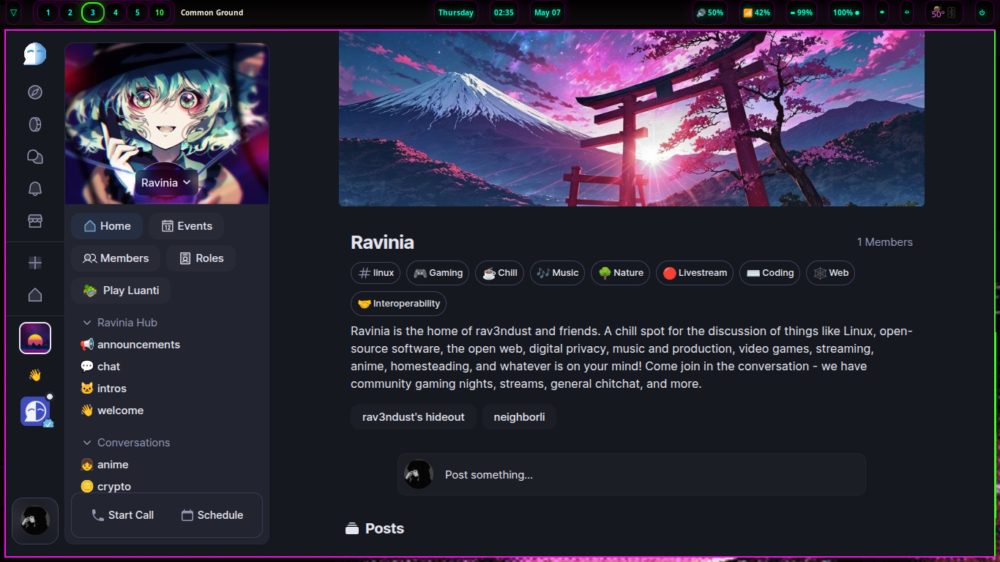

now | blog | wiki | recipes | bookmarks | contact | about | donate
* * * back home * * *
could this be where ravinia ends up?
2026-05-07

As you know from my previous blog posts, I have been thinking about what I am going to replace Discord with. There are a number of potential answers to this question, and the favorites that arose when I was pondering the answer for my own community were Matrix, CommonGround, Stoat, and Fluxer.
Each of them are open source software. However, after much experimentation with different platforms and replicating our same Discord server across each of these platforms and testing them out with community members, CommonGround might have risen as the winner. It isn't trying to entirely co-opt the Discord UI, it has some pretty unique features, and most importantly, it is free and open-source software.
CommonGround has some pretty cool features that I haven't found in any of the other alternatives I've been messing with. There is a Twitter Spaces sort of voice room, where you can start or join in on voice calls, or begin a Broadcast. You can also Schedule things in your community, so if you want to have a big community hangout night or do some gaming together, drop it on the calendar! It lives right there in the CommonGround room.
Like Discord, there is a list of categories and channels off to the left, where you can sort between channels and join whatever conversation you'd like to participate in. Another really cool thing, as you might can peep from the screenshot, is embeddable Activities into communities. If you look at the screenshot of the Ravinia CommonGround community, you will see a button labeled "Play Luanti". That's right - you can play some Luanti with your friends right there in our CommonGround community!
I am inviting everyone in our Ravinia community to make the switch with us over to CommonGround. I am going to share an invite link down below to our community room. I know some folks won't want to switch over from Discord, and I will be keeping the Ravinia Discord server going for the foreseeable future, however, the "main" hub is now over at CommonGround.
Want to switch over from Discord to something that is open-source, private, and a little different? CommonGround is the answer to the Discord question, for us in Ravinia at least. I invite you to join us! If you like programming, the open Web, GNU/Linux, music, art, streaming, video games, homesteading, writing, creating things, or just chilling out with like-minded, relaxed people, you will have a good time in Ravinia.
You can join us by clicking the link below:
Join the Ravinia CommonGround community!
I hope you decide to come check us out and hang out with us, play games, and create things!